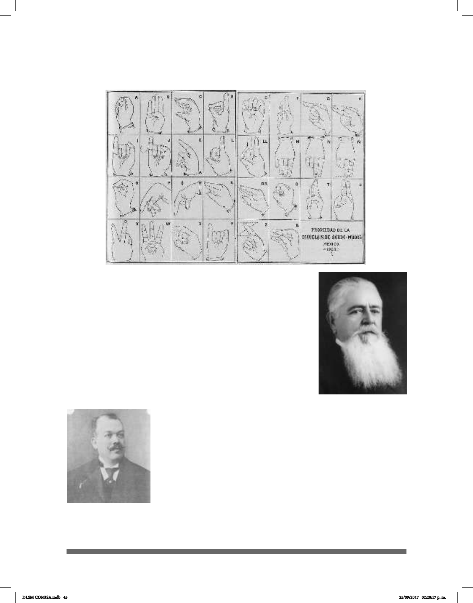

45
Además de Eduardo Huet, hubo muchas personas involucradas
en la educación de los sordos y cuyo objetivo era común: lograr
que los sordomudos, como se les llamaba en ese entonces,
se comunicaran oralmente con la mayoría de las personas
que oyen. Esta idea aún sigue manifestándose en México a tal
grado que en algunas instituciones se ha prohibido la Lengua
de Señas entre los sordos, ya que existe la creencia de que
ésta impide su aprendizaje. Una de las personas involucradas
en la educación de los Sordos fue el propio hijo de Huet, Adolfo
Pedro Huet Brodeke, quien nació en Río de Janeiro, fue ahijado
del Rey Pedro y vino a México cuando
era niño; se educó en Francia, pero en
México hizo sus estudios como especialista en la educación de
los sordomudos.
En 1900 fue becado en Europa, fue Director Interino de la
escuela por pocos días y, después de servir durante 33 años en
la educación de los sordomudos, fue retirado.
El 8 de abril de 1886 falleció Don Ramón Isaac Alcaraz, a quien
tanto debe la educación de los Sordos en México.
En 1890 Don Daniel García tradujo una obra clásica de Julio
Tarra, donde se fundamenta la enseñanza oral y pura.
Signos de que se valen los Sordos para hablar entre sí
Prof. Adolfo Pedro
Huet Brodeke
Don Daniel García,
Director de la Escuela
de Sordomudos (1927)
DLSM COMISA.indb 45 25/09/2017 02:20:17 p. m.